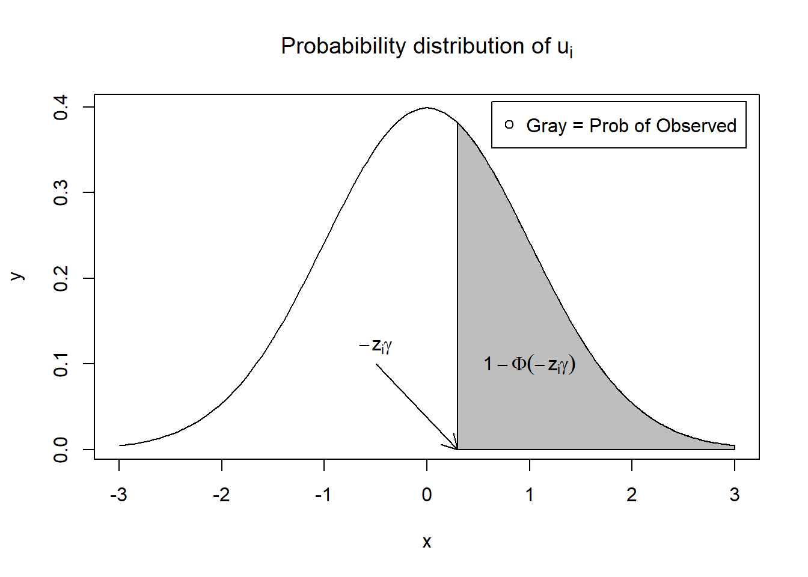
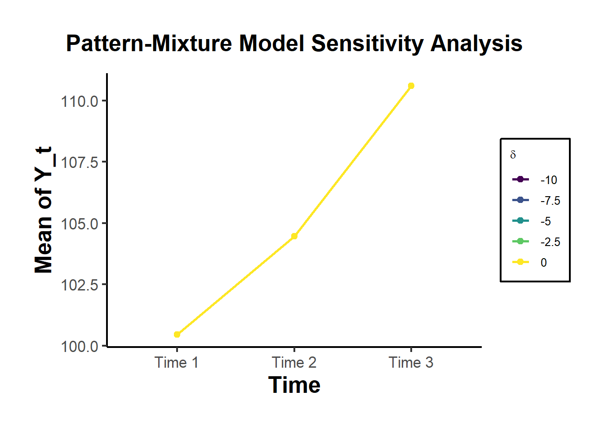

36.2 Endogenous Sample Selection
Endogenous sample selection arises in observational or non-experimental research whenever the inclusion of observations (or assignment to treatment) is not random, and the same unobservable factors influencing selection also affect the outcome of interest. This scenario leads to biased and inconsistent estimates of causal parameters (e.g., Average Treatment Effect) if not properly addressed.
This problem was first formalized in the econometric literature by J. Heckman (1974), J. J. Heckman (1976b), and J. J. Heckman (1979), whose work addressed the issue in the context of labor force participation among women. Later, Amemiya (1984) generalize the method. Now, it has since been applied widely across social sciences, epidemiology, marketing, and finance.
Endogenous sample selection is often conflated with general selection bias, but it is important to understand that sample selection refers specifically to the inclusion of observations into the estimation sample, not just to assignment into treatment (i.e., selection bias).
This problem comes in many names such as self-selection problem, incidental truncation, or omitted variable (i.e., the omitted variable is how people were selected into the sample). Some disciplines consider nonresponse/selection bias as sample selection:
- When unobservable factors that affect who is in the sample are independent of unobservable factors that affect the outcome, the sample selection is not endogenous. Hence, the sample selection is ignorable and estimator that ignores sample selection is still consistent.
- When the unobservable factors that affect who is included in the sample are correlated with the unobservable factors that affect the outcome, the sample selection is endogenous and not ignorable, because estimators that ignore endogenous sample selection are not consistent (we don’t know which part of the observable outcome is related to the causal relationship and which part is due to different people were selected for the treatment and control groups).
Many evaluation studies use observational data, and in such data:
- Participants are not randomly assigned.
- Treatment or exposure is determined by individual or institutional choices.
- Counterfactual outcomes are not observed.
- The treatment indicator is often endogenous.
Some notable terminologies include:
- Truncation: Occurs when data are collected only from a restricted subpopulation based on the value of a variable.
- Left truncation: Values below a threshold are excluded (e.g., only high-income individuals are surveyed).
- Right truncation: Values above a threshold are excluded.
- Censoring: Occurs when the variable is observed but coarsened beyond a threshold.
- E.g., incomes below a certain level are coded as zero; arrest counts above a threshold are top-coded.
- Incidental Truncation: Refers to selection based on a latent variable (e.g., employment decisions), not directly observed. This is what makes Heckman’s model distinct.
- Also called non-random sample selection.
- The error in the outcome equation is correlated with the selection indicator.
Researchers often categorize self-selection into:
- Negative (Mitigation-Based) Selection: Individuals select into a treatment or sample to address an existing problem, so they start off with worse potential outcomes.
- Bias direction: Underestimates true treatment effects (makes the treatment look less effective than it is).
- Individuals select into treatment to combat a problem they already face.
- Examples:
- People at high risk of severe illness (e.g., elderly or immunocompromised individuals) are more likely to get vaccinated. If we compare vaccinated vs. unvaccinated individuals without adjusting for risk factors, we might mistakenly conclude that vaccines are ineffective simply because vaccinated individuals had worse initial health conditions.
- Evaluating the effect of job training programs—unemployed individuals with the greatest difficulty finding jobs are most likely to enroll, leading to underestimated program benefits.
- Positive (Preference-Based) Selection: Individuals select into a treatment or sample because they have advantageous traits, preferences, or resources. Hence, those who take treatment are systematically better off compared to those who do not.
- Bias direction: Overestimates true treatment effects (makes the treatment look more effective than it is).
- Individuals select into treatment because they inherently prefer it, rather than because of an underlying problem.
- Examples:
- People who are health-conscious and physically active are more likely to join a fitness program. If we compare fitness program participants to non-participants, we might falsely attribute their better health outcomes to the program, when in reality, their pre-existing lifestyle contributed to their improved health.
- Evaluating the effect of private school education—students who attend private schools often come from wealthier families with greater academic support, making it difficult to isolate the true impact of the school itself.
Both forms of selection reflect correlation between unobservables (driving selection) and potential outcomes—the hallmark of endogenous selection bias.
Some seminal applied works in this area include:
- Labor Force Participation (J. Heckman 1974)
- Wages are observed only for women who choose to work.
- Unobservable preferences (reservation wages) drive participation.
- Ignoring this leads to biased estimates of the returns to education.
- Union Membership (Lewis 1986)
- Wages differ between union and non-union workers.
- But union membership is not exogenous—workers choose to join based on anticipated benefits.
- Naïve OLS yields biased estimates of union premium.
- Comparing income of college graduates vs. non-graduates.
- Attending college is a choice based on expected gains, ability, or family background.
- A treatment effect model (described next) is more appropriate here.
36.2.1 Unifying Model Frameworks
Though often conflated, there are several overlapping models to address endogenous selection:
- Sample Selection Model (J. J. Heckman 1979): Outcome is unobserved if an agent is not selected into the sample.
- Treatment Effect Model: Outcome is observed for both groups (treated vs. untreated), but treatment assignment is endogenous.
- Heckman-Type / Control Function Approaches: Decompose the endogenous regressor or incorporate a correction term (Inverse Mills Ratio or residual) to control for endogeneity.
All revolve around the challenge: unobserved factors affect both who is included (or treated) and outcomes.
To formalize the problem, we consider the outcome and selection equations. Let:
- \(y_i\): observed outcome (e.g., wage)
- \(x_i\): covariates affecting outcome
- \(z_i\): covariates affecting selection
- \(w_i\): binary indicator for selection into the sample (e.g., employment)
36.2.1.1 Sample Selection Model
We begin with an outcome equation, which describes the variable of interest \(y_i\). However, we only observe \(y_i\) if a certain selection mechanism indicates it is part of the sample. That mechanism is captured by a binary indicator \(w_i = 1\). Formally, the observed outcome equation is:
\[ \begin{aligned} y_i &= x_i' \beta + \varepsilon_i, \quad &\text{(Observed only if } w_i = 1\text{)}, \\ \varepsilon_i &\sim N(0, \sigma_\varepsilon^2). \end{aligned} \]
Here, \(x_i\) is a vector of explanatory variables (or covariates) that explain \(y_i\). The noise term \(\varepsilon_i\) is assumed to be normally distributed with mean zero and variance \(\sigma_\varepsilon^2\). However, because we only see \(y_i\) for those cases in which \(w_i = 1\), we must account for how the selection occurs.
Next, we specify the selection equation via a latent index model. Let \(w_i^*\) be an unobserved latent variable:
\[ \begin{aligned} w_i^* &= z_i' \gamma + u_i, \\ w_i &= \begin{cases} 1 & \text{if } w_i^* > 0, \\ 0 & \text{otherwise}. \end{cases} \end{aligned} \]
Here, \(z_i\) is a vector of variables that influence whether or not \(y_i\) is observed. In practice, \(z_i\) may overlap with \(x_i\), but can also include variables not in the outcome equation. For identification, we normalize \(\mathrm{Var}(u_i) = 1\). This is analogous to the probit model’s standard normalization.
Because \(w_i = 1\) exactly when \(w_i^* > 0\), this event occurs if \(u_i \ge -z_i' \gamma\). Therefore,
\[ \begin{aligned} P(w_i = 1) &= P\bigl(u_i \ge -z_i' \gamma\bigr),\\ &= 1 - \Phi\bigl(-z_i'\gamma\bigr), \\ &= \Phi\bigl(z_i'\gamma\bigr), \end{aligned} \]
where we use the symmetry of the standard normal distribution.
We assume \((\varepsilon_i, u_i)\) are jointly normally distributed with correlation \(\rho\). In other words,
\[ \begin{pmatrix} \varepsilon_i \\ u_i \end{pmatrix} \sim \mathcal{N} \!\Biggl( \begin{pmatrix} 0 \\ 0 \end{pmatrix}, \begin{pmatrix} \sigma^2_\varepsilon & \rho \sigma_\varepsilon \\ \rho \sigma_\varepsilon & 1 \end{pmatrix} \Biggr). \]
- If \(\rho = 0\), the selection is exogenous: whether \(y_i\) is observed is unrelated to unobserved determinants of \(y_i\).
- If \(\rho \neq 0\), sample selection is endogenous. Failing to model this selection mechanism leads to biased estimates of \(\beta\).
Interpreting \(\rho\)
- \(\rho > 0\): Individuals with higher unobserved components in \(\varepsilon_i\) (and thus typically larger \(y_i\)) are more likely to appear in the sample. (Positive selection)
- \(\rho < 0\): Individuals with higher unobserved components in \(\varepsilon_i\) are less likely to appear. (Negative selection)
- \(\rho = 0\): No endogenous selection. Observed outcomes are effectively random with respect to the unobserved part of \(y_i\).
In empirical practice, \(\rho\) signals the direction of bias one might expect if the selection process is ignored.
Often, it is helpful to visualize how part of the distribution of \(u_i\) (the error in the selection equation) is truncated based on the threshold \(w_i^*>0\). Below is a notional R code snippet that draws a normal density and shades the region where \(u_i > -z_i'\gamma\).
x = seq(-3, 3, length = 200)
y = dnorm(x, mean = 0, sd = 1)
plot(x,
y,
type = "l",
main = bquote("Probabibility distribution of" ~ u[i]))
x_shaded = seq(0.3, 3, length = 100)
y_shaded = dnorm(x_shaded, 0, 1)
polygon(c(0.3, x_shaded, 3), c(0, y_shaded, 0), col = "gray")
text(1, 0.1, expression(1 - Phi(-z[i] * gamma)))
arrows(-0.5, 0.1, 0.3, 0, length = 0.15)
text(-0.5, 0.12, expression(-z[i] * gamma))
legend("topright",
"Gray = Prob of Observed",
pch = 1,
inset = 0.02)
In this figure, the gray‐shaded area represents \(u_i > -z_i'\gamma\). Observations in that range are included in the sample. If \(\rho\neq 0\), then the unobserved factors that drive \(u_i\) also affect \(\varepsilon_i\), causing a non‐representative sample of \(\varepsilon_i\).
A core insight of the Heckman model is the conditional expectation of \(y_i\) given \(w_i=1\):
\[ E\bigl(y_i \mid w_i = 1\bigr) = E\bigl(y_i \mid w_i^*>0\bigr) = E\bigl(x_i'\beta + \varepsilon_i \mid u_i > -z_i'\gamma\bigr). \]
Since \(x_i'\beta\) is nonrandom (conditional on \(x_i\)), we get
\[ E\bigl(y_i \mid w_i=1\bigr) = x_i'\beta + E\bigl(\varepsilon_i \mid u_i > -z_i'\gamma\bigr). \]
From bivariate normal properties:
\[ \varepsilon_i | u_i=a \sim N\left(\rho\sigma_{\varepsilon}\cdot a, (1-\rho^2)\sigma_{\varepsilon}^2\right) \]
Thus,
\[ E\bigl(\varepsilon_i \mid u_i > -z_i'\gamma\bigr) = \rho\sigma_{\varepsilon} E\bigl(u_i \mid u_i > -z_i'\gamma\bigr). \]
If \(U\sim N(0,1)\), then
\[ E(U \mid U>a) = \frac{\phi(a)}{1-\Phi(a)} = \frac{\phi(a)}{\Phi(-a)}, \] where \(\phi\) is the standard normal pdf, \(\Phi\) is the cdf. By symmetry, \(\phi(-a)=\phi(a)\) and \(\Phi(-a)=1-\Phi(a)\). Letting \(a = -z_i'\gamma\) yields
\[ E\bigl(U \mid U > -z_i'\gamma\bigr) = \frac{\phi(-z_i'\gamma)}{1-\Phi(-z_i'\gamma)} = \frac{\phi(z_i'\gamma)}{\Phi(z_i'\gamma)}. \]
Define the Inverse Mills Ratio (IMR) as
\[ \lambda(x) = \frac{\phi(x)}{\Phi(x)}. \]
Hence,
\[ E\bigl(\varepsilon_i \mid u_i > -z_i'\gamma\bigr) = \rho\sigma_{\varepsilon}\lambda\bigl(z_i'\gamma\bigr), \] and therefore
\[ \boxed{ E\bigl(y_i \mid w_i=1\bigr) = x_i'\beta + \rho\sigma_{\varepsilon} \frac{\phi\bigl(z_i'\gamma\bigr)}{\Phi\bigl(z_i'\gamma\bigr)}. } \]
This extra term is the so‐called Heckman correction.
The IMR appears in the two‐step procedure as a regressor for bias correction. It has useful derivatives:
\[ \frac{d}{dx}[\text{IMR}(x)] = \frac{d}{dx}\left[\frac{\phi(x)}{\Phi(x)}\right] = -x\text{IMR}(x)-[\text{IMR}(x)]^2 \]
This arises from the quotient rule and the fact that \(\phi'(x)=-x\phi(x)\), \(\Phi'(x)=\phi(x)\). The derivative property also helps in interpreting marginal effects in selection models.
36.2.1.2 Treatment Effect (Switching) Model
While the sample selection model is used when outcome is only observed for one group (e.g., \(D = 1\)), the treatment effect model is used when outcomes are observed for both groups, but treatment assignment is endogenous.
Treatment Effect Model Equations:
- Outcome: \[ y_i = x_i' \beta + D_i \delta + \varepsilon_i \]
- Selection: \[\begin{aligned} D_i^* &= z_i' \gamma + u_i \\ D_i &= 1 \text{ if } D_i^* > 0 \end{aligned}\]
Where:
\(D_i\) is the treatment indicator.
\((\varepsilon_i, u_i)\) are again bivariate normal with correlation \(\rho\).
The treatment effect model is sometimes called a switching regression.
36.2.1.3 Heckman-Type vs. Control Function
- Heckman Sample Selection: Insert an Inverse Mills Ratio (IMR) to adjust the outcome equation for non-random truncation.
- Control Function: Residual-based or predicted-endogenous-variable approach that mirrors IV logic, but typically still requires an instrument or parametric assumption.
| Heckman Sample Selection Model | Heckman-Type Corrections | |
| When | Only observes one sample (treated), addressing selection bias directly. | Two samples are observed (treated and untreated), known as the control function approach. |
| Model | Probit | OLS (even for dummy endogenous variable) |
| Integration of 1st stage | Also include a term (called Inverse Mills ratio) besides the endogenous variable. | Decompose the endogenous variable to get the part that is uncorrelated with the error terms of the outcome equation. Either use the predicted endogenous variable directly or include the residual from the first-stage equation. |
| Advantages and Assumptions | Provides a direct test for endogeneity via the coefficient of the inverse Mills ratio but requires the assumption of joint normality of errors. | Does not require the assumption of joint normality, but can’t test for endogeneity directly. |
36.2.2 Estimation Methods
36.2.2.1 Heckman’s Two-Step Estimator (Heckit)
Step 1: Estimate Selection Equation with Probit
We estimate the probability of being included in the sample: \[ P(w_i = 1 \mid z_i) = \Phi(z_i' \gamma) \]
From the estimated model, we compute the Inverse Mills Ratio (IMR): \[ \lambda_i = \frac{\phi(z_i' \hat{\gamma})}{\Phi(z_i' \hat{\gamma})} \]
This term captures the expected value of the error in the outcome equation, conditional on selection.
Step 2: Include IMR in Outcome Equation
We then estimate the regression: \[ y_i = x_i' \beta + \delta \lambda_i + \nu_i \]
- If \(\delta\) is significantly different from 0, selection bias is present.
- \(\lambda_i\) corrects for the non-random selection.
- OLS on this augmented model yields consistent estimates of \(\beta\) under the joint normality assumption.
- Pros: Conceptually simple; widely used.
- Cons: Relies heavily on the bivariate normal assumption for \((\varepsilon_i, u_i)\). If no good exclusion variable is available, identification rests on the functional form.
Specifically, the model can be identified without an exclusion restriction, but in such cases, identification is driven purely by the non-linearity of the probit function and the normality assumption (through the IMR). This is fragile.
- With strong exclusion restriction for the covariate in the correction equation, the variation in this variable can help identify the control for selection.
- With weak exclusion restriction, and the variable exists in both steps, it’s the assumed error structure that identifies the control for selection (J. Heckman and Navarro-Lozano 2004).
- In management, Wolfolds and Siegel (2019) found that papers should have valid exclusion conditions, because without these, simulations show that results using the Heckman method are less reliable than those obtained with OLS.
For robust identification, we prefer an exclusion restriction:
- A variable that affects selection (through \(z_i\)) but not the outcome.
- Example: Distance to a training center might affect the probability of enrollment, but not post-training income.
Without such a variable, the model relies solely on functional form.
The Heckman two-step estimation procedure is less efficient than FIML. One key limitation is that the two-step estimator does not fully exploit the joint distribution of the error terms across equations, leading to a loss of efficiency. Moreover, the two-step approach may introduce measurement error in the second stage. This arises because the inverse Mills ratio used in the second stage is itself an estimated regressor, which can lead to biased standard errors and inference.
###########################
# SIM 1: Heckman 2-step #
###########################
suppressPackageStartupMessages(library(MASS))
set.seed(123)
n <- 1000
rho <- 0.5
beta_true <- 2
gamma_true <- 1.0
Sigma <- matrix(c(1, rho, rho, 1), 2)
errors <- mvrnorm(n, c(0,0), Sigma)
epsilon <- errors[,1]
u <- errors[,2]
x <- rnorm(n)
w <- rnorm(n)
# Selection
z_star <- w*gamma_true + u
z <- ifelse(z_star>0,1,0)
# Outcome
y_star <- x * beta_true + epsilon
# Observed only if z=1
y_obs <- ifelse(z == 1, y_star, NA)
# Step 1: Probit
sel_mod <- glm(z ~ w, family = binomial(link = "probit"))
z_hat <- predict(sel_mod, type = "link")
lambda_vals <- dnorm(z_hat) / pnorm(z_hat)
# Step 2: OLS on observed + IMR
data_heck <- data.frame(y = y_obs,
x = x,
imr = lambda_vals,
z = z)
observed_data <- subset(data_heck, z == 1)
heck_lm <- lm(y ~ x + imr, data = observed_data)
summary(heck_lm)
#>
#> Call:
#> lm(formula = y ~ x + imr, data = observed_data)
#>
#> Residuals:
#> Min 1Q Median 3Q Max
#> -2.76657 -0.60099 -0.02776 0.56317 2.74797
#>
#> Coefficients:
#> Estimate Std. Error t value Pr(>|t|)
#> (Intercept) 0.01715 0.07068 0.243 0.808
#> x 1.95925 0.03934 49.800 < 2e-16 ***
#> imr 0.41900 0.10063 4.164 3.69e-05 ***
#> ---
#> Signif. codes: 0 '***' 0.001 '**' 0.01 '*' 0.05 '.' 0.1 ' ' 1
#>
#> Residual standard error: 0.8942 on 501 degrees of freedom
#> Multiple R-squared: 0.8332, Adjusted R-squared: 0.8325
#> F-statistic: 1251 on 2 and 501 DF, p-value: < 2.2e-16
cat("True beta=", beta_true, "\n")
#> True beta= 2
cat("Heckman 2-step estimated beta=", coef(heck_lm)["x"], "\n")
#> Heckman 2-step estimated beta= 1.95924936.2.2.2 Full Information Maximum Likelihood
Jointly estimates the selection and outcome equations via ML, assuming:
\[ \biggl(\varepsilon_i, u_i\biggr) \sim \mathcal{N}\biggl(\begin{pmatrix}0\\0\end{pmatrix},\begin{pmatrix}\sigma_{\varepsilon}^2 & \rho\sigma_{\varepsilon}\\\rho\sigma_{\varepsilon} & 1\end{pmatrix}\biggr). \]
- Pros: More efficient if the distributional assumption is correct. Allows a direct test of \(\rho=0\) (LR test).
- Cons: More sensitive to specification errors (i.e., requires stronger distributional assumptions); potentially complex to implement.
We can use the sampleSelection package in R to perform full maximum likelihood estimation for the same data:
#############################
# SIM 2: 2-step vs. FIML #
#############################
suppressPackageStartupMessages(library(sampleSelection))
# Using same data (z, x, y_obs) from above
# 1) Heckman 2-step (built-in)
heck2 <-
selection(z ~ w, y_obs ~ x, method = "2step", data = data_heck)
summary(heck2)
#> --------------------------------------------
#> Tobit 2 model (sample selection model)
#> 2-step Heckman / heckit estimation
#> 1000 observations (496 censored and 504 observed)
#> 7 free parameters (df = 994)
#> Probit selection equation:
#> Estimate Std. Error t value Pr(>|t|)
#> (Intercept) 0.02053 0.04494 0.457 0.648
#> w 0.94063 0.05911 15.913 <2e-16 ***
#> Outcome equation:
#> Estimate Std. Error t value Pr(>|t|)
#> (Intercept) 0.01715 0.07289 0.235 0.814
#> x 1.95925 0.03924 49.932 <2e-16 ***
#> Multiple R-Squared:0.8332, Adjusted R-Squared:0.8325
#> Error terms:
#> Estimate Std. Error t value Pr(>|t|)
#> invMillsRatio 0.4190 0.1018 4.116 4.18e-05 ***
#> sigma 0.9388 NA NA NA
#> rho 0.4463 NA NA NA
#> ---
#> Signif. codes: 0 '***' 0.001 '**' 0.01 '*' 0.05 '.' 0.1 ' ' 1
#> --------------------------------------------
# 2) FIML
heckFIML <-
selection(z ~ w, y_obs ~ x, method = "ml", data = data_heck)
summary(heckFIML)
#> --------------------------------------------
#> Tobit 2 model (sample selection model)
#> Maximum Likelihood estimation
#> Newton-Raphson maximisation, 2 iterations
#> Return code 8: successive function values within relative tolerance limit (reltol)
#> Log-Likelihood: -1174.233
#> 1000 observations (496 censored and 504 observed)
#> 6 free parameters (df = 994)
#> Probit selection equation:
#> Estimate Std. Error t value Pr(>|t|)
#> (Intercept) 0.02169 0.04488 0.483 0.629
#> w 0.94203 0.05908 15.945 <2e-16 ***
#> Outcome equation:
#> Estimate Std. Error t value Pr(>|t|)
#> (Intercept) 0.008601 0.071315 0.121 0.904
#> x 1.959195 0.039124 50.077 <2e-16 ***
#> Error terms:
#> Estimate Std. Error t value Pr(>|t|)
#> sigma 0.94118 0.03503 26.867 < 2e-16 ***
#> rho 0.46051 0.09411 4.893 1.16e-06 ***
#> ---
#> Signif. codes: 0 '***' 0.001 '**' 0.01 '*' 0.05 '.' 0.1 ' ' 1
#> --------------------------------------------You can compare the coefficient estimates on x from heck2 vs. heckFIML. In large samples, both should converge to the true \(\beta\). FIML is typically more efficient, but if the normality assumption is violated, both can be biased.
36.2.2.3 CF and IV Approaches
- Control Function
- Residual-based approach: Regress the selection (or treatment) variable on excluded instruments and included controls. Obtain the predicted residual. Include that residual in the main outcome regression.
- If correlated residual is significant, that indicates endogeneity; adjusting for it can correct bias.
- Often used in the context of treatment effect models or simultaneously with IV logic.
- In the pure treatment effect context, an IV must affect treatment assignment but not the outcome directly.
- For sample selection, an exclusion restriction (“instrument”) must shift selection but not outcomes.
- Example: Distance to a training center influences participation in a job program but not post-training earnings.
36.2.3 Theoretical Connections
36.2.3.1 Conditional Expectation from Truncated Distributions
In the sample selection scenario:
\[ \begin{aligned} \mathbb{E}[y_i\mid w_i=1] &= x_i\beta + \mathbb{E}[\varepsilon_i\mid w_i^*>0],\\ &= x_i\beta + \rho\sigma_{\varepsilon}\frac{\phi(z_i'\gamma)}{\Phi(z_i'\gamma)}, \end{aligned} \]
where \(\rho\sigma_{\varepsilon}\) is the covariance term and \(\phi\) and \(\Phi\) are the standard normal PDF and CDF, respectively. This formula underpins the inverse Mills ratio correction.
- If \(\rho>0\), then the same unobservables that increase the likelihood of selection also increase outcomes, implying positive selection.
- If \(\rho<0\), selection is negatively correlated with outcomes.
- \(\hat{\rho}\): Estimated correlation of error terms. If significantly different from 0, endogenous selection is present.
- Wald or Likelihood Ratio Test: Used to test \(H_0: \rho = 0\).
- Lambda (\(\hat{\lambda}\)): Product of \(\hat{\rho} \hat{\sigma}_\varepsilon\)—measures strength of selection bias.
- Inverse Mills Ratio: Can be saved and inspected to understand sample inclusion probabilities.
36.2.3.2 Relationship Among Models
All the models in Unifying Model Frameworks can be seen as special or generalized cases:
If one only has data for the selected group, it’s a sample selection setup.
If data for both groups exist, but assignment is endogenous, it’s a treatment effect problem.
If there’s a valid instrument, one can do a control function or IV approach.
If the normality assumption holds and selection is truly parametric, Heckman or FIML correct for the bias.
Summary Table of Methods
| Method | Data Observed | Key Assumption | Exclusion? | Pros | Cons |
|---|---|---|---|---|---|
| OLS (Naive) | Full or partial, ignoring selection | No endogeneity in errors | Not required | Simple to implement | Biased if endogeneity is present |
| Heckman 2-Step (Heckit) | Outcome only for selected group | Joint normal errors; linear functional | Strongly recommended | Intuitive, widely used | Sensitive to normality/functional form. |
| FIML (Full ML) | Same as Heckman (subset observed) | Joint normal errors | Strongly recommended | More efficient, direct test of \(\rho=0\) | Complex, more sensitive to misspecification |
| Control Function | Observed data for both or one group (depending on setup) | Some form of valid instrument or exog. | Yes (instrument) | Extends easily to many models | Must find valid instrument, no direct test for endogeneity |
| Instrumental Variables | Observed data for both groups, or entire sample (for selection) | IV must affect selection but not outcome | Yes (instrument) | Common approach in program evaluation | Exclusion restriction validity is critical |
36.2.3.3 Concerns
- Small Samples: Two-step procedures can be unstable in smaller datasets.
- Exclusion Restrictions: Without a credible variable that predicts selection but not outcomes, identification depends purely on functional form (bivariate normal + nonlinearity of probit).
- Distributional Assumption: If normality is seriously violated, neither 2-step nor FIML may reliably remove bias.
- Measurement Error in IMR: The second-stage includes an estimated regressor \(\hat{\lambda}_i\), which can add noise.
- Connection to IV: If a strong instrument exists, one could proceed with a control function or standard IV in a treatment effect setup. But for sample selection (lack of data on unselected), the Heckman approach is more common.
- Presence of Correlation between the Error Terms: The Heckman treatment effect model outperforms OLS when \(\rho \neq 0\) because it corrects for selection bias due to unobserved factors. However, when \(\rho = 0\), the correction is unnecessary and can introduce inefficiency, making simpler methods more accurate.
36.2.4 Tobit-2: Heckman’s Sample Selection Model
The Tobit-2 model, also known as Heckman’s standard sample selection model, is designed to correct for sample selection bias. This arises when the outcome variable is only observed for a non-random subset of the population, and the selection process is correlated with the outcome of interest.
A key assumption of the model is the joint normality of the error terms in the selection and outcome equations.
36.2.4.1 Panel Study of Income Dynamics
We demonstrate the model using the classic dataset from Mroz (1984), which provides data from the 1975 Panel Study of Income Dynamics on married women’s labor-force participation and wages.
We aim to estimate the log of hourly wages for married women, using:
educ: Years of educationexper: Years of work experienceexper^2: Experience squared (to capture non-linear effects)city: A dummy for residence in a big city
However, wages are only observed for those who participated in the labor force, meaning an OLS regression using only this subsample would suffer from selection bias.
Because we also have data on non-participants, we can use Heckman’s two-step method to correct for this bias.
- Load and Prepare Data
library(sampleSelection)
library(dplyr)
library(nnet)
library(ggplot2)
library(reshape2)
data("Mroz87") # PSID data on married women in 1975
Mroz87 = Mroz87 %>%
mutate(kids = kids5 + kids618) # total number of children
head(Mroz87)
#> lfp hours kids5 kids618 age educ wage repwage hushrs husage huseduc huswage
#> 1 1 1610 1 0 32 12 3.3540 2.65 2708 34 12 4.0288
#> 2 1 1656 0 2 30 12 1.3889 2.65 2310 30 9 8.4416
#> 3 1 1980 1 3 35 12 4.5455 4.04 3072 40 12 3.5807
#> 4 1 456 0 3 34 12 1.0965 3.25 1920 53 10 3.5417
#> 5 1 1568 1 2 31 14 4.5918 3.60 2000 32 12 10.0000
#> 6 1 2032 0 0 54 12 4.7421 4.70 1040 57 11 6.7106
#> faminc mtr motheduc fatheduc unem city exper nwifeinc wifecoll huscoll
#> 1 16310 0.7215 12 7 5.0 0 14 10.910060 FALSE FALSE
#> 2 21800 0.6615 7 7 11.0 1 5 19.499981 FALSE FALSE
#> 3 21040 0.6915 12 7 5.0 0 15 12.039910 FALSE FALSE
#> 4 7300 0.7815 7 7 5.0 0 6 6.799996 FALSE FALSE
#> 5 27300 0.6215 12 14 9.5 1 7 20.100058 TRUE FALSE
#> 6 19495 0.6915 14 7 7.5 1 33 9.859054 FALSE FALSE
#> kids
#> 1 1
#> 2 2
#> 3 4
#> 4 3
#> 5 3
#> 6 0- Model Overview
The two-step Heckman selection model proceeds as follows:
Selection Equation (Probit):
Models the probability of labor force participation (lfp = 1) as a function of variables that affect the decision to work.Outcome Equation (Wage):
Models log wages conditional on working. A correction term, the IMR, is included to account for the non-random selection into work.
Step 1: Naive OLS on Observed Wages
ols1 = lm(log(wage) ~ educ + exper + I(exper ^ 2) + city,
data = subset(Mroz87, lfp == 1))
summary(ols1)
#>
#> Call:
#> lm(formula = log(wage) ~ educ + exper + I(exper^2) + city, data = subset(Mroz87,
#> lfp == 1))
#>
#> Residuals:
#> Min 1Q Median 3Q Max
#> -3.10084 -0.32453 0.05292 0.36261 2.34806
#>
#> Coefficients:
#> Estimate Std. Error t value Pr(>|t|)
#> (Intercept) -0.5308476 0.1990253 -2.667 0.00794 **
#> educ 0.1057097 0.0143280 7.378 8.58e-13 ***
#> exper 0.0410584 0.0131963 3.111 0.00199 **
#> I(exper^2) -0.0007973 0.0003938 -2.025 0.04352 *
#> city 0.0542225 0.0680903 0.796 0.42629
#> ---
#> Signif. codes: 0 '***' 0.001 '**' 0.01 '*' 0.05 '.' 0.1 ' ' 1
#>
#> Residual standard error: 0.6667 on 423 degrees of freedom
#> Multiple R-squared: 0.1581, Adjusted R-squared: 0.1501
#> F-statistic: 19.86 on 4 and 423 DF, p-value: 5.389e-15This OLS is biased because it only includes women who chose to work.
Step 2: Heckman Two-Step Estimation
# Heckman 2-step estimation
heck1 = heckit(
selection = lfp ~ age + I(age ^ 2) + kids + huswage + educ,
outcome = log(wage) ~ educ + exper + I(exper ^ 2) + city,
data = Mroz87
)
# Stage 1: Selection equation (probit)
summary(heck1$probit)
#> --------------------------------------------
#> Probit binary choice model/Maximum Likelihood estimation
#> Newton-Raphson maximisation, 4 iterations
#> Return code 1: gradient close to zero (gradtol)
#> Log-Likelihood: -482.8212
#> Model: Y == '1' in contrary to '0'
#> 753 observations (325 'negative' and 428 'positive') and 6 free parameters (df = 747)
#> Estimates:
#> Estimate Std. error t value Pr(> t)
#> XS(Intercept) -4.18146681 1.40241567 -2.9816 0.002867 **
#> XSage 0.18608901 0.06517476 2.8552 0.004301 **
#> XSI(age^2) -0.00241491 0.00075857 -3.1835 0.001455 **
#> XSkids -0.14955977 0.03825079 -3.9100 9.230e-05 ***
#> XShuswage -0.04303635 0.01220791 -3.5253 0.000423 ***
#> XSeduc 0.12502818 0.02277645 5.4894 4.034e-08 ***
#> ---
#> Signif. codes: 0 '***' 0.001 '**' 0.01 '*' 0.05 '.' 0.1 ' ' 1
#> Significance test:
#> chi2(5) = 64.10407 (p=1.719042e-12)
#> --------------------------------------------
# Stage 2: Wage equation with selection correction
summary(heck1$lm)
#>
#> Call:
#> lm(formula = YO ~ -1 + XO + imrData$IMR1, subset = YS == 1, weights = weightsNoNA)
#>
#> Residuals:
#> Min 1Q Median 3Q Max
#> -3.09494 -0.30953 0.05341 0.36530 2.34770
#>
#> Coefficients:
#> Estimate Std. Error t value Pr(>|t|)
#> XO(Intercept) -0.6143381 0.3768796 -1.630 0.10383
#> XOeduc 0.1092363 0.0197062 5.543 5.24e-08 ***
#> XOexper 0.0419205 0.0136176 3.078 0.00222 **
#> XOI(exper^2) -0.0008226 0.0004059 -2.026 0.04335 *
#> XOcity 0.0510492 0.0692414 0.737 0.46137
#> imrData$IMR1 0.0551177 0.2111916 0.261 0.79423
#> ---
#> Signif. codes: 0 '***' 0.001 '**' 0.01 '*' 0.05 '.' 0.1 ' ' 1
#>
#> Residual standard error: 0.6674 on 422 degrees of freedom
#> Multiple R-squared: 0.7734, Adjusted R-squared: 0.7702
#> F-statistic: 240 on 6 and 422 DF, p-value: < 2.2e-16The variable kids is used only in the selection equation. This follows good practice: at least one variable should appear only in the selection equation (serving as an instrument) to help identify the model.
# ML estimation of Heckman selection model
ml1 = selection(
selection = lfp ~ age + I(age^2) + kids + huswage + educ,
outcome = log(wage) ~ educ + exper + I(exper^2) + city,
data = Mroz87
)
summary(ml1)
#> --------------------------------------------
#> Tobit 2 model (sample selection model)
#> Maximum Likelihood estimation
#> Newton-Raphson maximisation, 3 iterations
#> Return code 8: successive function values within relative tolerance limit (reltol)
#> Log-Likelihood: -914.0777
#> 753 observations (325 censored and 428 observed)
#> 13 free parameters (df = 740)
#> Probit selection equation:
#> Estimate Std. Error t value Pr(>|t|)
#> (Intercept) -4.1484037 1.4109302 -2.940 0.003382 **
#> age 0.1842132 0.0658041 2.799 0.005253 **
#> I(age^2) -0.0023925 0.0007664 -3.122 0.001868 **
#> kids -0.1488158 0.0384888 -3.866 0.000120 ***
#> huswage -0.0434253 0.0123229 -3.524 0.000451 ***
#> educ 0.1255639 0.0229229 5.478 5.91e-08 ***
#> Outcome equation:
#> Estimate Std. Error t value Pr(>|t|)
#> (Intercept) -0.5814781 0.3052031 -1.905 0.05714 .
#> educ 0.1078481 0.0172998 6.234 7.63e-10 ***
#> exper 0.0415752 0.0133269 3.120 0.00188 **
#> I(exper^2) -0.0008125 0.0003974 -2.044 0.04129 *
#> city 0.0522990 0.0682652 0.766 0.44385
#> Error terms:
#> Estimate Std. Error t value Pr(>|t|)
#> sigma 0.66326 0.02309 28.729 <2e-16 ***
#> rho 0.05048 0.23169 0.218 0.828
#> ---
#> Signif. codes: 0 '***' 0.001 '**' 0.01 '*' 0.05 '.' 0.1 ' ' 1
#> --------------------------------------------The MLE approach jointly estimates both equations, yielding consistent and asymptotically efficient estimates.
Manual Implementation: Constructing the IMR
# Step 1: Probit model
myprob <- probit(lfp ~ age + I(age^2) + kids + huswage + educ,
data = Mroz87)
summary(myprob)
#> --------------------------------------------
#> Probit binary choice model/Maximum Likelihood estimation
#> Newton-Raphson maximisation, 4 iterations
#> Return code 1: gradient close to zero (gradtol)
#> Log-Likelihood: -482.8212
#> Model: Y == '1' in contrary to '0'
#> 753 observations (325 'negative' and 428 'positive') and 6 free parameters (df = 747)
#> Estimates:
#> Estimate Std. error t value Pr(> t)
#> (Intercept) -4.18146681 1.40241567 -2.9816 0.002867 **
#> age 0.18608901 0.06517476 2.8552 0.004301 **
#> I(age^2) -0.00241491 0.00075857 -3.1835 0.001455 **
#> kids -0.14955977 0.03825079 -3.9100 9.230e-05 ***
#> huswage -0.04303635 0.01220791 -3.5253 0.000423 ***
#> educ 0.12502818 0.02277645 5.4894 4.034e-08 ***
#> ---
#> Signif. codes: 0 '***' 0.001 '**' 0.01 '*' 0.05 '.' 0.1 ' ' 1
#> Significance test:
#> chi2(5) = 64.10407 (p=1.719042e-12)
#> --------------------------------------------
# Step 2: Compute IMR
imr <- invMillsRatio(myprob)
Mroz87$IMR1 <- imr$IMR1
# Step 3: Wage regression including IMR
manually_est <- lm(log(wage) ~ educ + exper + I(exper^2) + city + IMR1,
data = Mroz87,
subset = (lfp == 1))
summary(manually_est)
#>
#> Call:
#> lm(formula = log(wage) ~ educ + exper + I(exper^2) + city + IMR1,
#> data = Mroz87, subset = (lfp == 1))
#>
#> Residuals:
#> Min 1Q Median 3Q Max
#> -3.09494 -0.30953 0.05341 0.36530 2.34770
#>
#> Coefficients:
#> Estimate Std. Error t value Pr(>|t|)
#> (Intercept) -0.6143381 0.3768796 -1.630 0.10383
#> educ 0.1092363 0.0197062 5.543 5.24e-08 ***
#> exper 0.0419205 0.0136176 3.078 0.00222 **
#> I(exper^2) -0.0008226 0.0004059 -2.026 0.04335 *
#> city 0.0510492 0.0692414 0.737 0.46137
#> IMR1 0.0551177 0.2111916 0.261 0.79423
#> ---
#> Signif. codes: 0 '***' 0.001 '**' 0.01 '*' 0.05 '.' 0.1 ' ' 1
#>
#> Residual standard error: 0.6674 on 422 degrees of freedom
#> Multiple R-squared: 0.1582, Adjusted R-squared: 0.1482
#> F-statistic: 15.86 on 5 and 422 DF, p-value: 2.505e-14Equivalent Method Using glm and Manual IMR Calculation
# Probit via glm
probit_selection <- glm(
lfp ~ age + I(age^2) + kids + huswage + educ,
data = Mroz87,
family = binomial(link = 'probit')
)
# Compute predicted latent index and IMR
probit_lp <- -predict(probit_selection)
inv_mills <- dnorm(probit_lp) / (1 - pnorm(probit_lp))
Mroz87$inv_mills <- inv_mills
# Second stage: Wage regression with correction
probit_outcome <- glm(
log(wage) ~ educ + exper + I(exper^2) + city + inv_mills,
data = Mroz87,
subset = (lfp == 1)
)
summary(probit_outcome)
#>
#> Call:
#> glm(formula = log(wage) ~ educ + exper + I(exper^2) + city +
#> inv_mills, data = Mroz87, subset = (lfp == 1))
#>
#> Coefficients:
#> Estimate Std. Error t value Pr(>|t|)
#> (Intercept) -0.6143383 0.3768798 -1.630 0.10383
#> educ 0.1092363 0.0197062 5.543 5.24e-08 ***
#> exper 0.0419205 0.0136176 3.078 0.00222 **
#> I(exper^2) -0.0008226 0.0004059 -2.026 0.04335 *
#> city 0.0510492 0.0692414 0.737 0.46137
#> inv_mills 0.0551179 0.2111918 0.261 0.79423
#> ---
#> Signif. codes: 0 '***' 0.001 '**' 0.01 '*' 0.05 '.' 0.1 ' ' 1
#>
#> (Dispersion parameter for gaussian family taken to be 0.4454809)
#>
#> Null deviance: 223.33 on 427 degrees of freedom
#> Residual deviance: 187.99 on 422 degrees of freedom
#> AIC: 876.49
#>
#> Number of Fisher Scoring iterations: 2Comparing Models
library(stargazer)
library(plm)
library(sandwich)
# Custom robust SE function
cse = function(reg) {
sqrt(diag(vcovHC(reg, type = "HC1")))
}
# Comparison table
stargazer(
ols1, heck1, ml1, manually_est,
se = list(cse(ols1), NULL, NULL, NULL),
title = "Married Women's Wage Regressions: OLS vs Heckman Models",
type = "text",
df = FALSE,
digits = 4,
selection.equation = TRUE
)
#>
#> Married Women's Wage Regressions: OLS vs Heckman Models
#> =========================================================================
#> Dependent variable:
#> -----------------------------------------------------
#> log(wage) lfp log(wage)
#> OLS Heckman selection OLS
#> selection
#> (1) (2) (3) (4)
#> -------------------------------------------------------------------------
#> age 0.1861*** 0.1842***
#> (0.0652) (0.0658)
#>
#> I(age2) -0.0024*** -0.0024***
#> (0.0008) (0.0008)
#>
#> kids -0.1496*** -0.1488***
#> (0.0383) (0.0385)
#>
#> huswage -0.0430*** -0.0434***
#> (0.0122) (0.0123)
#>
#> educ 0.1057*** 0.1250*** 0.1256*** 0.1092***
#> (0.0130) (0.0228) (0.0229) (0.0197)
#>
#> exper 0.0411*** 0.0419***
#> (0.0154) (0.0136)
#>
#> I(exper2) -0.0008* -0.0008**
#> (0.0004) (0.0004)
#>
#> city 0.0542 0.0510
#> (0.0653) (0.0692)
#>
#> IMR1 0.0551
#> (0.2112)
#>
#> Constant -0.5308*** -4.1815*** -4.1484*** -0.6143
#> (0.2032) (1.4024) (1.4109) (0.3769)
#>
#> -------------------------------------------------------------------------
#> Observations 428 753 753 428
#> R2 0.1581 0.1582 0.1582
#> Adjusted R2 0.1501 0.1482 0.1482
#> Log Likelihood -914.0777
#> rho 0.0830 0.0505 (0.2317)
#> Inverse Mills Ratio 0.0551 (0.2099)
#> Residual Std. Error 0.6667 0.6674
#> F Statistic 19.8561*** 15.8635***
#> =========================================================================
#> Note: *p<0.1; **p<0.05; ***p<0.01IMR: If the coefficient on the IMR is statistically significant, it suggests selection bias is present and that OLS estimates are biased.
\(\rho\): Represents the estimated correlation between the error terms of the selection and outcome equations. A significant \(\rho\) implies non-random selection, justifying the Heckman correction.
In our case, if the IMR coefficient is not statistically different from zero, then selection bias may not be a serious concern.
36.2.4.2 The Role of Exclusion Restrictions in Heckman’s Model
This example, adapted from the sampleSelection, demonstrates the identification of the sample selection model using simulated data.
We compare two cases:
One where an exclusion restriction is present (i.e., selection and outcome equations use different regressors).
One where the same regressor is used in both equations.
Case 1: With Exclusion Restriction
set.seed(0)
library(sampleSelection)
library(mvtnorm)
# Simulate bivariate normal error terms with correlation -0.7
eps <-
rmvnorm(500, mean = c(0, 0), sigma = matrix(c(1,-0.7,-0.7, 1), 2, 2))
# Independent explanatory variable for selection equation
xs <- runif(500)
# Selection: Probit model (latent utility model)
ys_latent <- xs + eps[, 1]
ys <- ys_latent > 0 # observed participation indicator (TRUE/FALSE)
# Independent explanatory variable for outcome equation
xo <- runif(500)
# Latent outcome variable
yo_latent <- xo + eps[, 2]
# Observed outcome: only when selected (ys == TRUE)
yo <- yo_latent * ys
# Estimate Heckman's selection model
model_with_exclusion <-
selection(selection = ys ~ xs, outcome = yo ~ xo)
summary(model_with_exclusion)
#> --------------------------------------------
#> Tobit 2 model (sample selection model)
#> Maximum Likelihood estimation
#> Newton-Raphson maximisation, 5 iterations
#> Return code 1: gradient close to zero (gradtol)
#> Log-Likelihood: -712.3163
#> 500 observations (172 censored and 328 observed)
#> 6 free parameters (df = 494)
#> Probit selection equation:
#> Estimate Std. Error t value Pr(>|t|)
#> (Intercept) -0.2228 0.1081 -2.061 0.0399 *
#> xs 1.3377 0.2014 6.642 8.18e-11 ***
#> Outcome equation:
#> Estimate Std. Error t value Pr(>|t|)
#> (Intercept) -0.0002265 0.1294178 -0.002 0.999
#> xo 0.7299070 0.1635925 4.462 1.01e-05 ***
#> Error terms:
#> Estimate Std. Error t value Pr(>|t|)
#> sigma 0.9190 0.0574 16.009 < 2e-16 ***
#> rho -0.5392 0.1521 -3.544 0.000431 ***
#> ---
#> Signif. codes: 0 '***' 0.001 '**' 0.01 '*' 0.05 '.' 0.1 ' ' 1
#> --------------------------------------------Key Observations:
The variables
xsandxoare independent, fulfilling the exclusion restriction.The outcome equation is identified not only by the non-linearity of the model but also by the presence of a regressor in the selection equation that is absent from the outcome equation.
This mirrors realistic scenarios in applied business settings, such as:
Participation in the labor force driven by family or geographic factors (
xs), while wages depend on skills or education (xo).Loan application driven by personal risk preferences, while interest rates depend on credit score or income.
Case 2: Without Exclusion Restriction
# Now use the same regressor (xs) in both equations
yo_latent2 <- xs + eps[, 2]
yo2 <- yo_latent2 * ys
# Re-estimate model without exclusion restriction
model_no_exclusion <-
selection(selection = ys ~ xs, outcome = yo2 ~ xs)
summary(model_no_exclusion)
#> --------------------------------------------
#> Tobit 2 model (sample selection model)
#> Maximum Likelihood estimation
#> Newton-Raphson maximisation, 14 iterations
#> Return code 8: successive function values within relative tolerance limit (reltol)
#> Log-Likelihood: -712.8298
#> 500 observations (172 censored and 328 observed)
#> 6 free parameters (df = 494)
#> Probit selection equation:
#> Estimate Std. Error t value Pr(>|t|)
#> (Intercept) -0.1984 0.1114 -1.781 0.0756 .
#> xs 1.2907 0.2085 6.191 1.25e-09 ***
#> Outcome equation:
#> Estimate Std. Error t value Pr(>|t|)
#> (Intercept) -0.5499 0.5644 -0.974 0.33038
#> xs 1.3987 0.4482 3.120 0.00191 **
#> Error terms:
#> Estimate Std. Error t value Pr(>|t|)
#> sigma 0.85091 0.05352 15.899 <2e-16 ***
#> rho -0.13226 0.72684 -0.182 0.856
#> ---
#> Signif. codes: 0 '***' 0.001 '**' 0.01 '*' 0.05 '.' 0.1 ' ' 1
#> --------------------------------------------What changes?
The estimates remain approximately unbiased because the model is still identified by functional form (non-linear selection mechanism).
However, the standard errors are substantially larger, leading to less precise inference.
Why Exclusion Restrictions Matter
The exclusion restriction improves identification by introducing additional variation that affects selection but not the outcome. This is a common recommendation in empirical work:
In the first case,
xshelps explain who is selected, whilexohelps explain the outcome, enabling more precise estimates.In the second case, all variation comes from
xs, meaning the model relies solely on the distributional assumptions (e.g., joint normality of errors) for identification.
Best Practice (for applied researchers):
Always try to include at least one variable in the selection equation that does not appear in the outcome equation. This helps identify the model and improves estimation precision.
36.2.5 Tobit-5: Switching Regression Model
The Tobit-5 model, also known as the Switching Regression Model, generalizes Heckman’s sample selection model to allow for two separate outcome equations:
- One model for participants
- A different model for non-participants
Assumptions:
- The selection process determines which outcome equation is observed.
- There is at least one variable in the selection equation that does not appear in the outcome equations (i.e., an exclusion restriction), which improves identification.
- The errors from all three equations (selection, outcome1, outcome2) are assumed to be jointly normally distributed.
This model is especially relevant when selection is endogenous and both groups (selected and unselected) have distinct data-generating processes.
36.2.5.1 Simulated Example: With Exclusion Restriction
set.seed(0)
library(sampleSelection)
library(mvtnorm)
# Define a 3x3 covariance matrix with positive correlations
vc <- diag(3)
vc[lower.tri(vc)] <- c(0.9, 0.5, 0.1)
vc[upper.tri(vc)] <- t(vc)[upper.tri(vc)]
# Generate multivariate normal error terms
eps <- rmvnorm(500, mean = c(0, 0, 0), sigma = vc)
# Selection equation regressor (xs), uniformly distributed
xs <- runif(500)
# Binary selection indicator: ys = 1 if selected
ys <- xs + eps[, 1] > 0
# Separate regressors for two regimes (fulfilling exclusion restriction)
xo1 <- runif(500)
yo1 <- xo1 + eps[, 2] # Outcome for selected group
xo2 <- runif(500)
yo2 <- xo2 + eps[, 3] # Outcome for non-selected group
# Fit switching regression model
model_switch <- selection(ys ~ xs, list(yo1 ~ xo1, yo2 ~ xo2))
summary(model_switch)
#> --------------------------------------------
#> Tobit 5 model (switching regression model)
#> Maximum Likelihood estimation
#> Newton-Raphson maximisation, 11 iterations
#> Return code 1: gradient close to zero (gradtol)
#> Log-Likelihood: -895.8201
#> 500 observations: 172 selection 1 (FALSE) and 328 selection 2 (TRUE)
#> 10 free parameters (df = 490)
#> Probit selection equation:
#> Estimate Std. Error t value Pr(>|t|)
#> (Intercept) -0.1550 0.1051 -1.474 0.141
#> xs 1.1408 0.1785 6.390 3.86e-10 ***
#> Outcome equation 1:
#> Estimate Std. Error t value Pr(>|t|)
#> (Intercept) 0.02708 0.16395 0.165 0.869
#> xo1 0.83959 0.14968 5.609 3.4e-08 ***
#> Outcome equation 2:
#> Estimate Std. Error t value Pr(>|t|)
#> (Intercept) 0.1583 0.1885 0.840 0.401
#> xo2 0.8375 0.1707 4.908 1.26e-06 ***
#> Error terms:
#> Estimate Std. Error t value Pr(>|t|)
#> sigma1 0.93191 0.09211 10.118 <2e-16 ***
#> sigma2 0.90697 0.04434 20.455 <2e-16 ***
#> rho1 0.88988 0.05353 16.623 <2e-16 ***
#> rho2 0.17695 0.33139 0.534 0.594
#> ---
#> Signif. codes: 0 '***' 0.001 '**' 0.01 '*' 0.05 '.' 0.1 ' ' 1
#> --------------------------------------------The estimated coefficients are close to the true values (intercept = 0, slope = 1), and the model converges well due to correct specification and valid exclusion restriction.
36.2.5.2 Example: Functional Form Misspecification
To demonstrate how non-normal errors or skewed distributions affect the model, consider the following:
set.seed(0)
eps <- rmvnorm(1000, mean = rep(0, 3), sigma = vc)
# Induce skewness: squared errors minus 1 to ensure mean zero
eps <- eps^2 - 1
# Generate xs on a skewed interval [-1, 0]
xs <- runif(1000, -1, 0)
ys <- xs + eps[, 1] > 0
xo1 <- runif(1000)
yo1 <- xo1 + eps[, 2]
xo2 <- runif(1000)
yo2 <- xo2 + eps[, 3]
# Attempt model estimation
summary(selection(ys ~ xs, list(yo1 ~ xo1, yo2 ~ xo2), iterlim = 20))
#> --------------------------------------------
#> Tobit 5 model (switching regression model)
#> Maximum Likelihood estimation
#> Newton-Raphson maximisation, 12 iterations
#> Return code 3: Last step could not find a value above the current.
#> Boundary of parameter space?
#> Consider switching to a more robust optimisation method temporarily.
#> Log-Likelihood: -1695.102
#> 1000 observations: 782 selection 1 (FALSE) and 218 selection 2 (TRUE)
#> 10 free parameters (df = 990)
#> Probit selection equation:
#> Estimate Std. Error t value Pr(>|t|)
#> (Intercept) -0.660315 0.082477 -8.006 3.3e-15 ***
#> xs 0.007167 0.088630 0.081 0.936
#> Outcome equation 1:
#> Estimate Std. Error t value Pr(>|t|)
#> (Intercept) -0.31351 0.04868 -6.44 1.86e-10 ***
#> xo1 1.03862 0.08049 12.90 < 2e-16 ***
#> Outcome equation 2:
#> Estimate Std. Error t value Pr(>|t|)
#> (Intercept) -2.6835 0.2043 -13.132 < 2e-16 ***
#> xo2 1.0230 0.1309 7.814 1.41e-14 ***
#> Error terms:
#> Estimate Std. Error t value Pr(>|t|)
#> sigma1 0.70172 0.02000 35.09 <2e-16 ***
#> sigma2 2.49651 NaN NaN NaN
#> rho1 0.51564 0.04216 12.23 <2e-16 ***
#> rho2 1.00000 NaN NaN NaN
#> ---
#> Signif. codes: 0 '***' 0.001 '**' 0.01 '*' 0.05 '.' 0.1 ' ' 1
#> --------------------------------------------Even though the exclusion restriction is preserved, non-normal errors introduce bias in the intercept estimates, and convergence is less reliable. This illustrates how functional form misspecification (i.e., deviations from assumed distributional forms) impacts performance.
36.2.5.3 Example: No Exclusion Restriction
Here we remove the exclusion restriction by using the same regressor (xs) in both outcome equations.
set.seed(0)
xs <- runif(1000, -1, 1)
ys <- xs + eps[, 1] > 0
yo1 <- xs + eps[, 2]
yo2 <- xs + eps[, 3]
# Fit switching regression without exclusion restriction
summary(tmp <-
selection(ys ~ xs, list(yo1 ~ xs, yo2 ~ xs), iterlim = 20))
#> --------------------------------------------
#> Tobit 5 model (switching regression model)
#> Maximum Likelihood estimation
#> Newton-Raphson maximisation, 16 iterations
#> Return code 1: gradient close to zero (gradtol)
#> Log-Likelihood: -1879.552
#> 1000 observations: 615 selection 1 (FALSE) and 385 selection 2 (TRUE)
#> 10 free parameters (df = 990)
#> Probit selection equation:
#> Estimate Std. Error t value Pr(>|t|)
#> (Intercept) -0.33425 0.04280 -7.81 1.46e-14 ***
#> xs 0.94762 0.07763 12.21 < 2e-16 ***
#> Outcome equation 1:
#> Estimate Std. Error t value Pr(>|t|)
#> (Intercept) -0.49592 0.06800 -7.293 6.19e-13 ***
#> xs 0.84530 0.06789 12.450 < 2e-16 ***
#> Outcome equation 2:
#> Estimate Std. Error t value Pr(>|t|)
#> (Intercept) 0.3861 0.4967 0.777 0.4371
#> xs 0.6254 0.3322 1.882 0.0601 .
#> Error terms:
#> Estimate Std. Error t value Pr(>|t|)
#> sigma1 0.61693 0.02054 30.029 <2e-16 ***
#> sigma2 1.59059 0.05745 27.687 <2e-16 ***
#> rho1 0.19981 0.15863 1.260 0.208
#> rho2 -0.01259 0.29339 -0.043 0.966
#> ---
#> Signif. codes: 0 '***' 0.001 '**' 0.01 '*' 0.05 '.' 0.1 ' ' 1
#> --------------------------------------------This model may fail to converge or produce biased estimates, especially for the intercepts. Even if it does converge, the reliability of the inference is questionable due to weak identification from using the same regressor across all equations.
Notes on Estimation and Convergence
The log-likelihood function of switching regression models is not globally concave, so the estimation process may:
Fail to converge
Converge to a local maximum
Practical Tips:
Try different starting values or random seeds
Use alternative maximization algorithms (e.g.,
optimcontrol)Consider rescaling variables or centering predictors
Refer to Non-Linear Regression for advanced diagnostics
Model Comparison Summary
| Scenario | Exclusion Restriction | Convergence | Bias | Variance |
|---|---|---|---|---|
| Well-specified with exclusion | Yes | Likely | No | Low |
| Misspecified distribution | Yes | Risky | Yes (intercepts) | Moderate |
| No exclusion restriction | No | Often fails | Yes | High |
36.2.6 Pattern-Mixture Models
In the context of endogenous sample selection, one of the central challenges is modeling the joint distribution of the outcome and the selection mechanism when data are Missing Not At Random (MNAR). In this framework, the probability that an outcome is observed may depend on unobserved values of that outcome, making the missingness mechanism nonignorable.
Previously, we discussed the selection model approach (e.g., Heckman’s Tobit-2 model), which factorizes the joint distribution as:
\[ \mathbb{P}(Y, R) = \mathbb{P}(Y) \cdot \mathbb{P}(R \mid Y), \]
where:
\(Y\) is the outcome of interest,
\(R\) is the response indicator (with \(R = 1\) if \(Y\) is observed, \(R = 0\) otherwise).
This approach models the selection process explicitly via \(\mathbb{P}(R \mid Y)\), often using a parametric model such as the probit.
However, the pattern-mixture model (PMM) offers an alternative and equally valid factorization:
\[ \mathbb{P}(Y, R) = \mathbb{P}(Y \mid R) \cdot \mathbb{P}(R), \]
which decomposes the joint distribution by conditioning on the response pattern. This approach is particularly advantageous when the selection mechanism is complex, or when interest lies in modeling how the outcome distribution varies across response strata.
36.2.6.1 Definition of the Pattern-Mixture Model
Let \((Y_i, R_i)\) for \(i = 1, \dots, n\) denote the observed data, where:
- \(Y_i \in \mathbb{R}^p\) is the multivariate outcome of interest,
- \(R_i \in \{0,1\}^p\) is a missingness pattern indicator vector, where \(R_{ij} = 1\) indicates that \(Y_{ij}\) is observed.
Define \(\mathcal{R}\) as the finite set of all possible response patterns. For each pattern \(r \in \mathcal{R}\), partition the outcome vector \(Y\) into:
- \(Y_{(r)}\): observed components of \(Y\) under pattern \(r\),
- \(Y_{(\bar{r})}\): missing components of \(Y\) under pattern \(r\).
The joint distribution can then be factorized according to the pattern-mixture model as:
\[ f(Y, R) = f(Y \mid R = r) \cdot \mathbb{P}(R = r), \quad r \in \mathcal{R}. \]
The marginal distribution of \(Y\) is obtained by summing over all response patterns:
\[ f(Y) = \sum_{r \in \mathcal{R}} f(Y \mid R = r) \cdot \mathbb{P}(R = r). \]
In the simplest case of binary response patterns (complete responders \(R=1\) and complete nonresponders \(R=0\)), this reduces to:
\[ \mathbb{P}(Y) = \mathbb{P}(Y \mid R = 1) \cdot \mathbb{P}(R = 1) + \mathbb{P}(Y \mid R = 0) \cdot \mathbb{P}(R = 0). \]
Thus, the overall distribution of \(Y\) is explicitly treated as a mixture of distributions for responders and nonresponders. While \(\mathbb{P}(Y \mid R = 1)\) can be directly estimated from observed data, \(\mathbb{P}(Y \mid R = 0)\) cannot be identified from data alone, necessitating additional assumptions or sensitivity parameters for its estimation.
Common approaches for addressing non-identifiability involve defining plausible deviations from \(\mathbb{P}(Y \mid R = 1)\) using specific sensitivity parameters such as:
- Shift Bias: Adjusting imputed values by a constant \(\delta\) to reflect systematic differences in nonresponders.
- Scale Bias: Scaling imputed values to account for differing variability.
- Shape Bias: Reweighting imputations, for example, using methods like Selection-Indicator Reweighting (SIR), to capture distributional shape differences.
In this discussion, primary focus is placed on the shift parameter \(\delta\), hypothesizing that nonresponse shifts the mean of \(Y\) by \(\delta\) units.
In practice, since only observed components \(Y_{(r)}\) are available for individuals with missing data, modeling the full conditional distribution \(f(Y \mid R = r)\) requires extrapolating from observed to unobserved components.
36.2.6.2 Modeling Strategy and Identifiability
Suppose the full-data conditional distribution is parameterized by pattern-specific parameters \(\theta_r\) for each response pattern \(r \in \mathcal{R}\):
\[ f(Y \mid R = r; \theta_r), \quad \text{with } \theta = \{\theta_r : r \in \mathcal{R}\}. \]
Then, the marginal distribution of \(Y\) can be expressed as:
\[ f(Y; \theta, \psi) = \sum_{r \in \mathcal{R}} f(Y \mid R = r; \theta_r) \cdot \mathbb{P}(R = r; \psi), \]
where \(\psi\) parameterizes the distribution of response patterns.
Important points about identifiability include:
- The model is inherently non-identifiable without explicit assumptions regarding the distribution of missing components \(Y_{(\bar{r})}\).
- Estimating \(f(Y_{(\bar{r})} \mid Y_{(r)}, R = r)\) requires external information, expert knowledge, or assumptions encapsulated in sensitivity parameters.
The conditional density for each response pattern can be further decomposed as:
\[ f(Y \mid R = r) = f(Y_{(r)} \mid R = r) \cdot f(Y_{(\bar{r})} \mid Y_{(r)}, R = r). \]
- The first term \(f(Y_{(r)} \mid R = r)\) is estimable directly from observed data.
- The second term \(f(Y_{(\bar{r})} \mid Y_{(r)}, R = r)\) cannot be identified from observed data alone and must rely on assumptions or additional sensitivity analysis.
36.2.6.3 Location Shift Models
A widely used strategy in PMMs is to introduce a location shift for the unobserved outcomes. Specifically, assume that:
\[ Y_{(\bar{r})} \mid Y_{(r)}, R = r \sim \mathcal{L}(Y_{(\bar{r})} \mid Y_{(r)}, R = r = r^*) + \delta_r, \]
where:
\(r^*\) denotes a fully observed (reference) pattern (e.g., \(R = 1^p\)),
\(\delta_r\) is a vector of sensitivity parameters that quantify the mean shift for missing outcomes under pattern \(r\).
More formally, for each \(r \in \mathcal{R}\) and unobserved component \(j \in \bar{r}\), we specify:
\[ \mathbb{E}[Y_j \mid Y_{(r)}, R = r] = \mathbb{E}[Y_j \mid Y_{(r)}, R = r^*] + \delta_{rj}. \]
Under this framework:
- Setting \(\delta_r = 0\) corresponds to the MAR assumption (i.e., ignorability).
- Nonzero \(\delta_r\) introduces controlled deviations from MAR and enables sensitivity analysis.
36.2.6.4 Sensitivity Analysis in Pattern-Mixture Models
To evaluate the robustness of inferences to the missing data mechanism, we perform sensitivity analysis by varying \(\delta_r\) over plausible ranges.
Bias in Estimation
Let \(\mu = \mathbb{E}[Y]\) be the target estimand. Under the pattern-mixture decomposition:
\[ \mu = \sum_{r \in \mathcal{R}} \mathbb{E}[Y \mid R = r] \cdot \mathbb{P}(R = r), \]
and under the shift model:
\[ \mathbb{E}[Y \mid R = r] = \tilde{\mu}_r + \delta_r^{*}, \]
where:
\(\tilde{\mu}_r\) is the mean computed using observed data (e.g., via imputation under MAR),
\(\delta_r^{*}\) is a vector with entries equal to the mean shifts \(\delta_{rj}\) for missing components and 0 for observed components.
Therefore, the overall bias induced by nonzero shifts is:
\[ \Delta = \sum_{r \in \mathcal{R}} \delta_r^{*} \cdot \mathbb{P}(R = r). \]
This highlights how the overall expectation depends linearly on the sensitivity parameters and their associated pattern probabilities.
Practical Recommendations
- Use subject-matter knowledge to specify plausible ranges for \(\delta_r\).
- Consider standard increments (e.g., \(\pm 0.2\) SD units) or domain-specific metrics (e.g., \(\pm 5\) P/E for valuation).
- If the dataset is large and the number of missingness patterns is small (e.g., monotone dropout), more detailed pattern-specific modeling is feasible.
36.2.6.5 Generalization to Multivariate and Longitudinal Data
Suppose \(Y = (Y_1, \dots, Y_T)\) is a longitudinal outcome. Let \(D \in \{1, \dots, T+1\}\) denote the dropout time, where \(D = t\) implies observation up to time \(t-1\).
Then the pattern-mixture factorization becomes:
\[ f(Y, D) = f(Y \mid D = t) \cdot \mathbb{P}(D = t), \quad t = 2, \dots, T+1. \]
Assume a parametric model:
\[ Y_j \mid D = t \sim \mathcal{N}(\beta_{0t} + \beta_{1t} t_j, \sigma_t^2), \quad \text{for } j = 1, \dots, T. \]
Then the overall mean trajectory becomes:
\[ \mathbb{E}[Y_j] = \sum_{t=2}^{T+1} (\beta_{0t} + \beta_{1t} t_j) \cdot \mathbb{P}(D = t). \]
This model allows for dropout-pattern-specific trajectories and can flexibly account for deviations in the distributional shape due to dropout.
36.2.6.6 Comparison with Selection Models
| Feature | Selection Model | Pattern-Mixture Model |
|---|---|---|
| Factorization | \(\mathbb{P}(Y) \cdot \mathbb{P}(R \mid Y)\) | \(\mathbb{P}(Y \mid R) \cdot \mathbb{P}(R)\) |
| Target of modeling | Missingness process \(\mathbb{P}(R \mid Y)\) | Distribution of \(Y\) under \(R\) |
| Assumption for identifiability | MAR (often Probit) | Extrapolation (e.g., shift \(\delta\)) |
| Modeling burden | On \(\mathbb{P}(R \mid Y)\) | On \(f(Y \mid R)\) |
| Sensitivity analysis | Less interpretable | Easily parameterized (via \(\delta\)) |
library(tidyverse)
library(mice)
library(mvtnorm)
library(ggplot2)
library(broom)
library(patchwork)- Simulate Longitudinal Dropout Data
We simulate a 3-time-point longitudinal outcome, where dropout depends on unobserved future outcomes, i.e., MNAR.
set.seed(123)
# Parameters
n <- 100
time <- c(0, 1, 2)
beta <- c(100, 5) # intercept and slope
sigma <- 5
dropout_bias <- -10 # MNAR: lower future Y -> more dropout
# Simulate full data (Y1, Y2, Y3)
Y <- matrix(NA, nrow = n, ncol = 3)
for (i in 1:3) {
Y[, i] <- beta[1] + beta[2] * time[i] + rnorm(n, 0, sigma)
}
# Dropout mechanism: higher chance to drop if Y3 is low
prob_dropout <- plogis(-0.5 + 0.2 * (dropout_bias - Y[, 3]))
drop <- rbinom(n, 1, prob_dropout)
# Define dropout time: if drop == 1, then Y3 is missing
R <- matrix(1, nrow = n, ncol = 3)
R[drop == 1, 3] <- 0
# Observed data
Y_obs <- Y
Y_obs[R == 0] <- NA
# Combine into a data frame
df <-
data.frame(
id = 1:n,
Y1 = Y_obs[, 1],
Y2 = Y_obs[, 2],
Y3 = Y_obs[, 3],
R3 = R[, 3]
)- Fit Pattern-Mixture Model with Delta Adjustment
We model \(Y_3\) as a function of \(Y_1\) and \(Y_2\), using the observed cases (complete cases), and create multiple imputed datasets under various shift parameters \(\delta\) to represent different MNAR scenarios.
# Base linear model for Y3 ~ Y1 + Y2
model_cc <- lm(Y3 ~ Y1 + Y2, data = df, subset = R3 == 1)
# Predict for missing Y3s
preds <- predict(model_cc, newdata = df)
# Sensitivity values for delta
delta_seq <- c(0, -2.5, -5, -7.5, -10) # in units of Y3
# Perform delta adjustment
imputed_dfs <- lapply(delta_seq, function(delta) {
df_new <- df
df_new$Y3_imp <- ifelse(is.na(df$Y3),
preds + delta,
df$Y3)
df_new$delta <- delta
return(df_new)
})
# Stack all results
df_imp_all <- bind_rows(imputed_dfs)- Estimate Full-Data Mean and Trajectory under Each Delta
We now estimate the mean of \(Y_3\) and the full outcome trajectory across delta values.
estimates <- df_imp_all %>%
group_by(delta) %>%
summarise(
mu_Y1 = mean(Y1, na.rm = TRUE),
mu_Y2 = mean(Y2, na.rm = TRUE),
mu_Y3 = mean(Y3_imp),
.groups = "drop"
) %>%
pivot_longer(cols = starts_with("mu"),
names_to = "Time",
values_to = "Mean") %>%
mutate(Time = factor(
Time,
levels = c("mu_Y1", "mu_Y2", "mu_Y3"),
labels = c("Time 1", "Time 2", "Time 3")
))- Visualization: Sensitivity Analysis
We visualize how the mean trajectory changes across different sensitivity parameters \(\delta\).
ggplot(estimates, aes(
x = Time,
y = Mean,
color = as.factor(delta),
group = delta
)) +
geom_line(linewidth = 1) +
geom_point(size = 2) +
scale_color_viridis_d(name = expression(delta)) +
labs(
title = "Pattern-Mixture Model Sensitivity Analysis",
y = "Mean of Y_t",
x = "Time"
) +
causalverse::ama_theme()
- Sensitivity Table for Reporting
This table quantifies the change in \(\mu_{Y3}\) across sensitivity scenarios.
df_summary <- df_imp_all %>%
group_by(delta) %>%
summarise(
Mean_Y3 = mean(Y3_imp),
SD_Y3 = sd(Y3_imp),
N_Missing = sum(is.na(Y3)),
N_Observed = sum(!is.na(Y3))
)
knitr::kable(df_summary, digits = 2,
caption = "Sensitivity of Estimated Mean of Y3 to Delta Adjustments")| delta | Mean_Y3 | SD_Y3 | N_Missing | N_Observed |
|---|---|---|---|---|
| -10.0 | 110.6 | 4.75 | 0 | 100 |
| -7.5 | 110.6 | 4.75 | 0 | 100 |
| -5.0 | 110.6 | 4.75 | 0 | 100 |
| -2.5 | 110.6 | 4.75 | 0 | 100 |
| 0.0 | 110.6 | 4.75 | 0 | 100 |
- Interpretation and Discussion
The estimated mean of \(Y_3\) decreases linearly with increasingly negative \(\delta\), as expected.
This illustrates the non-identifiability of the distribution of missing data without unverifiable assumptions.
The results provide a tipping point analysis: at what \(\delta\) does inference about the mean (or treatment effect, in a causal study) substantially change?